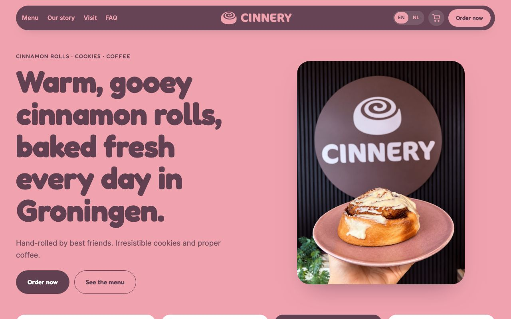
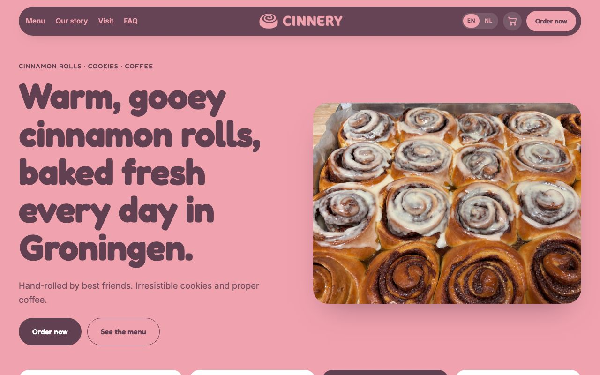

Choose a design
Two versions of the same site: same menu, photos, texts, cart and product pages. Only the opening photo differs.

A
Plate & logo
Opens with the cinnamon roll on a pink plate in front of the Cinnery sign.

B
Baking tray
Opens with a tray of freshly baked rolls, glazed and unglazed, straight from the oven.
© Cinnery · Site by sadrobot